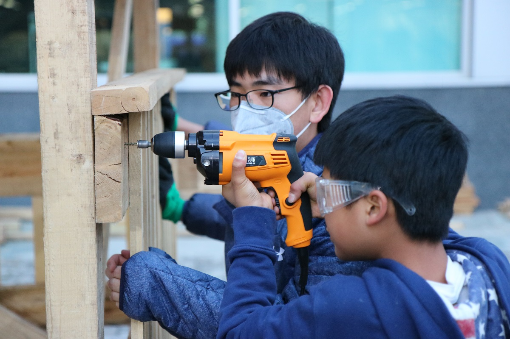

The Incredible Super Build Rollercoaster Project
Role: Co-Instigator, Facilitator
Context: After-School Activity at The International School of Beijing
Time: September-November 2017
Team: Built together with ISB students, process facilitated together with Jaguar Kristeller
My friend Jaguar and I had the chance to host an after-school activity at the International School of Beijing. We wanted to challenge the assumptions around education, experiment with the role of the teacher, and see how far students can push their comfort zone. To give you some background, most students in the school have never used power tools. We thought it was time for the students to leave the books behind for a while and to get their hands dirty. That's how the Incredible Super Build Project was born. The simple idea to let the students build something big that none believe they could, including themselves.
We met with the first group of students to decide what we were going to build. Ideas floated around the room such as building a tank or a wooden structure with the sole purpose of burning it down. However, as it became known that Jaguar had built a roller coaster while studying at MIT in 2014, it was clear the students wanted their own version inside ISB.

First of all, the students had to convince the school principals, design teachers and CFO to allow them to use the given budget for building a roller coaster on campus. The deadline for the project was to have it ready for the Innovation Expo, hosted annually by ISB. The presentation went well, and they were given a green light to continue the development. Next up was to order the material needed.

The spirit was high and our team of Super Builders grew. Middle schoolers worked alongside high schoolers, all with the mission to build the coolest thing the school had ever seen. Students were teaching newcomers how to operate power tools, others were taking a lead on finishing CAD drawings and some created a website and posters.

Things went so well, it was too good to be true. So one day, we got news from the insurance company serving the school saying that no person was to be allowed to ride the roller coaster. Another restriction was to have no people standing on a structure taller than 2 meters. The Super Build Team was quite (very) disappointed, but after a long discussion concluded that they were going to finish the roller coaster despite the restrictions. They wanted to prove to the school and insurance company that they could build a safe roller coaster with proper calculations and safety features. And just put a big teddy bear in the seat instead. We went back to the drawing board to work with the new restrictions. The students took the lead on making new G-force calculations and CAD designs.
What really began to both fascinate and impress me was the dedication and motivation among the students. Even though they were entering a period of exams and other after-school activities, but they kept prioritizing the Incredible Super Build Project. I asked them if they would have been as excited if we were building a wooden house. The answer was "No". Apparently it was the roller coaster, as it involved moving parts, lots of exciting physics and did not try to solve any problems besides just being cool and making people cheer and/or puke (an actual goal from the first meeting).
Both Jaguar and I practice a very hands-off facilitation style, where we try to intervene only when necessary and let the students make (not too critical) mistakes. We ask lots of questions instead of pointing out flaws in their designs and ideas, making them realize and correct mistakes themselves. We often point out things that needs to be done, and give students a chance to responsibility and ownership of those tasks.
After putting in a lot of work the last week, our team managed to complete the whole project for the Innovation Expo. During the Innovation Expo, a lot of parents and other students came to see the roller coaster and it definitely fulfilled its purpose of inspiring. However, none ended up puking, not even the teddy bear.
The way I see it, this project point out how we often set the bar too low in the education space. It also show how powerful it is to harness students intrinsic motivation to learn new things.